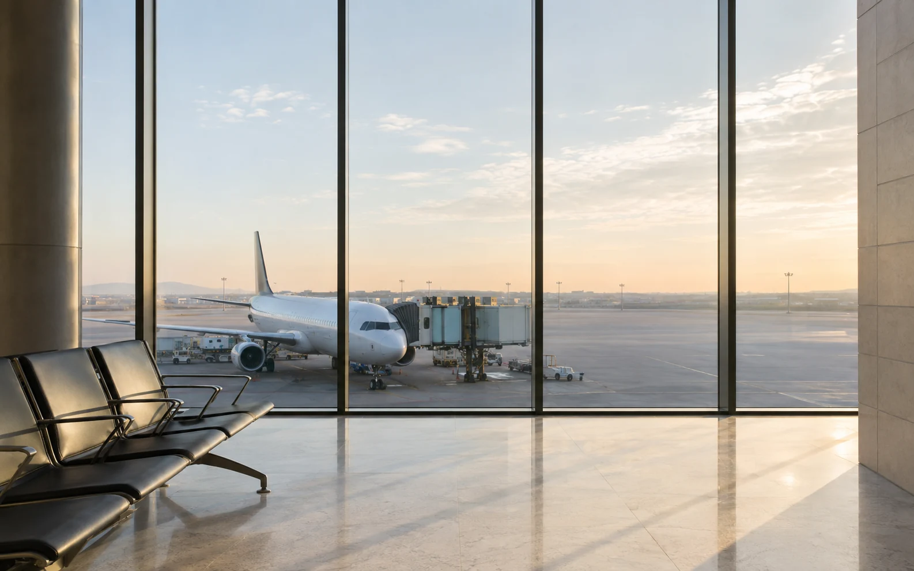

YOUR EVERYDAY DEPARTURE差旅，也可以轻一点
✳ 下一站，准备好了。
出发前，
把一切理清。
从一个目的地，到一段妥帖的行程。
那些繁琐的小事，交给 Hommey。

THE ART OF ARRIVINGNO. 01
给路上的风景。A LITTLE LESS HURRY.
EVERY JOURNEY BEGINS HERE ↗
LESS FRICTION. MORE JOURNEY.